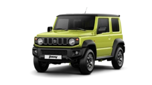
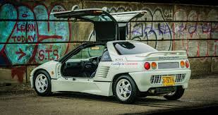
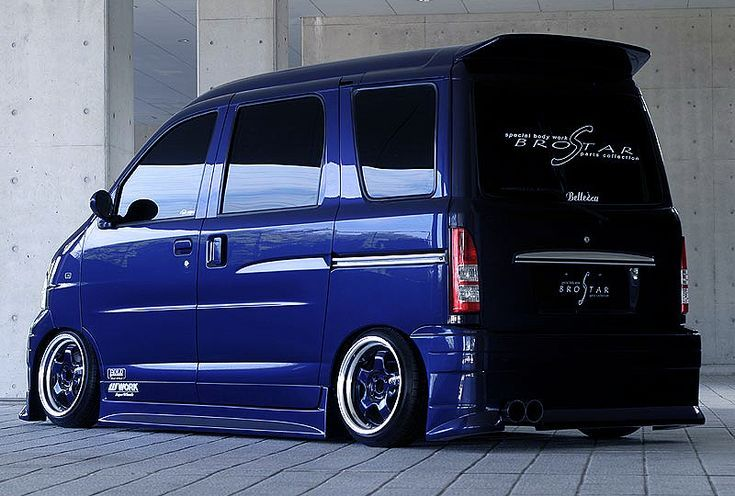

THE SHOWROOM

The showroom shows you most popular kei vechicle models and it explains how they perform in different situations.

Kei cars come in different trim levels, allowing the you to choose which vechile you want.
The choices for mira are as follow
Mira J-TypeQ
Mira J-TypeP
Mira J-Turbo
Mira J-4WD
-
The J-TypeQ is the basic model made for efficency
-
The J-TypeP is a more advanced model with better features.
-
The J-Turbo includes a turbo, it is the fastest model of the four models
-
The J-4WD drives on all foor wheels which is good for rough terrian and snowy areas
THE MOST POPULAR MODELS
What makes it popular?
The Jimny is a True Off-Roader in a Tiny Package.
- Its retro, utilitarian design is both cute and rugged, giving it broad appeal
- Its compact size makes it ideal for tight urban environments, yet it’s robust enough for the toughest rural trails.
- The Jimny sticks to old-school mechanics and straightforward tech, which many drivers appreciate for ease of maintenance and reliability.
What makes it popular?
The Mid-Engine, Rear-Wheel Drive Layout of the Honda Beat that makes it peppy, is the reason it well loved.
- Its 656cc, 3-cylinder engine revs to 9,000 RPM, delivering power with a raw, engaging character.
- The Beat is a convertible, making it perfect for fun drives on twisty roads or sunny days, despite its kei car size, making alot of FUN.
- The Beat was designed purely for driving pleasure, making it a rare breed.
MAZDA
 AUTOZAM
AUTOZAM
The AZ-1’s gullwing doors that are normally seen on exotic supercars, make it instantly eye-catching and futuristic, especially for such a tiny car. The cre is so unique and special making it a popular model
WHAT MAKES KEI CARS & VEHICLES SPECIAL
COMPACT SIZE: Kei cars; which is short for "keijidosha" which means light automobile are very small cars which are practical for city use. These vehicles are built for city use because the size of a kei car is limited to 3.4 meters length, a width of 1.48 meters and 2.0 meters in height. These are the legal limitations.
WHAT MAKES KEI CARS & VEHICLES SPECIAL
LOW MAINTENANCE COSTS: Runningthe vehicle day to day is not bad for the wallet. the vehicle are simple machines and their small parts are abundent and cheap to replace or maintain. The reason for the abundence of parts is due to the sharing ofparts that kei car companies do, that further reduces the sevice cost.
WHAT MAKES KEI CARS & VEHICLES SPECIAL

ECO-FRIENDLY: Kei cars are restricted to engines no larger than 660cc, these resulting in lower carbon dioxide emissions. These engines accompanied by the lightweight design of the vehicle makes the car more efficient, the vehicle averages a consumption rate of 20-25 km/L.
WHAT MAKES KEI CARS & VEHICLES SPECIAL

PARKING PERFECTION: The dimensions of these vehicles make it easy to sgeeze your car into any parking spot. U-turns are made easier by the tight turning radius of the car.